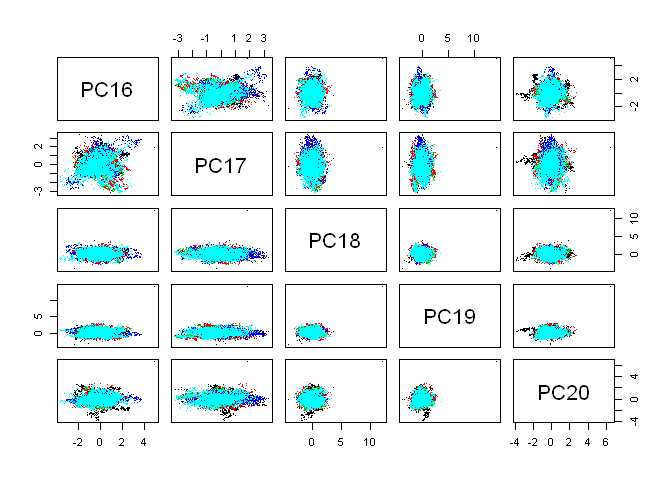

Practical Machine Learning Course Project Writeup
by Sergey Nikonov
We have huge dataset from quantified self movement devices and want to predict manner in which persons did the exercise.
Let’s load the data and take a look at it.
data <- read.csv(file="pml-training.csv", stringsAsFactors=F, sep=",")
dim(data)## [1] 19622 160table(is.na(data))##
## FALSE TRUE
## 1852048 1287472Many variables, many NAs. Let’s take out variables with NAs, near zero variance and not needed for prediction (perhaps).
library(caret)## Loading required package: lattice
## Loading required package: ggplot2data <- data[-nearZeroVar(data)]
nas <- sapply(data[,1:100], function(x) table(is.na(x))[1])
data <- data[, nas==19622]
data <- data[, c(-1,-3:-7)]And what about correlation?
table(symnum(cor(data[,c(-1, -53)])))##
## * , . + 1 B
## 1275 1059 5 35 166 7 51 3attr(symnum(cor(data[, c(-1, -53)])), "legend")## [1] "0 ' ' 0.3 '.' 0.6 ',' 0.8 '+' 0.9 '*' 0.95 'B' 1"Some preprocessing will be good.
pre <- preProcess(data[c(-1, -53)], method="pca", thresh=0.95)
predata <- predict(pre, data[ c(-1, -53)])Now we can take a look into preprocessed data. 25 variables are better than 160.
qplot(predata[,1], predata[,2], color=data[,53])
We have 5 exellent clusters, but they look like a mess. It is person’s clusters, may be.
qplot(predata[,1], predata[,2], color=data[,1])
OK then. At least we can differentiate persons.
Seems like we can not divide “classe” in 2 dimensions, so let’s algorithm do it for us.
pairs(predata[,16:20], col=as.factor(data[,53]), pch=".")
I had two choices: a) use something strong as boosting or random forest o b) find something simple and accurate enough. After digging in caret models I found k-nearest neighbors. Let’s try.
library(caret)
data[,53] <- as.factor(data[,53])
tr <- trainControl( method="cv", number=3, p=0.3)
tune <- data.frame(k=1:3)
fit <- train(y=data[,53], x=predata, tuneGrid=tune, trControl=tr,
method="knn" )
fit## k-Nearest Neighbors
##
## 19622 samples
## 25 predictor
## 5 classes: 'A', 'B', 'C', 'D', 'E'
##
## No pre-processing
## Resampling: Cross-Validated (3 fold)
##
## Summary of sample sizes: 13081, 13082, 13081
##
## Resampling results across tuning parameters:
##
## k Accuracy Kappa Accuracy SD Kappa SD
## 1 1 1 5e-04 6e-04
## 2 1 1 1e-03 1e-03
## 3 1 1 2e-03 2e-03
##
## Accuracy was used to select the optimal model using the largest value.
## The final value used for the model was k = 1.plot(varImp(fit), scales=list(cex=0.5))## Loading required package: pROC
## Type 'citation("pROC")' for a citation.
##
## Attaching package: 'pROC'
##
## The following objects are masked from 'package:stats':
##
## cov, smooth, var
Hm. Exellent accuracy and Kappa. May be overfitting? Whatever. Create a prediction and compare to another.
test <- read.csv(file="pml-testing.csv", stringsAsFactors=F, sep=",")
test <- test[,names(test) %in% names(data)]
pretest <- predict(pre, test[,-1])
preKnn <- predict(fit, pretest)If it is a prediction, here must be a random forest. Just to make sure.
library(doParallel)## Loading required package: foreach
## Loading required package: iterators
## Loading required package: paralleltr <- trainControl(method="cv", number=3, p=0.3)
cl <- makePSOCKcluster(2)
clusterEvalQ(cl, library(foreach))## [[1]]
## [1] "foreach" "methods" "stats" "graphics" "grDevices" "utils"
## [7] "datasets" "base"
##
## [[2]]
## [1] "foreach" "methods" "stats" "graphics" "grDevices" "utils"
## [7] "datasets" "base"registerDoParallel(cl)
fitRF <- train(y=data[,53], x=predata, trControl=tr, method="parRF")## Loading required package: randomForest
## randomForest 4.6-10
## Type rfNews() to see new features/changes/bug fixes.fitRF## Parallel Random Forest
##
## 19622 samples
## 25 predictor
## 5 classes: 'A', 'B', 'C', 'D', 'E'
##
## No pre-processing
## Resampling: Cross-Validated (3 fold)
##
## Summary of sample sizes: 13081, 13080, 13083
##
## Resampling results across tuning parameters:
##
## mtry Accuracy Kappa Accuracy SD Kappa SD
## 2 1 1.0 0.003 0.004
## 13 1 1.0 0.003 0.004
## 25 1 0.9 0.003 0.004
##
## Accuracy was used to select the optimal model using the largest value.
## The final value used for the model was mtry = 2.plot(varImp(fitRF), scales=list(cex=0.7))
preRF <- predict(fitRF, pretest)Notice size of fit (7.9 Mb) and fitRF (64.5 Mb).
And the moment of truth.
confusionMatrix(predict(fit, predata), data$classe) ## Confusion Matrix and Statistics
##
## Reference
## Prediction A B C D E
## A 5580 0 0 0 0
## B 0 3797 0 0 0
## C 0 0 3422 0 0
## D 0 0 0 3216 0
## E 0 0 0 0 3607
##
## Overall Statistics
##
## Accuracy : 1
## 95% CI : (1, 1)
## No Information Rate : 0.284
## P-Value [Acc > NIR] : <2e-16
##
## Kappa : 1
## Mcnemar's Test P-Value : NA
##
## Statistics by Class:
##
## Class: A Class: B Class: C Class: D Class: E
## Sensitivity 1.000 1.000 1.000 1.000 1.000
## Specificity 1.000 1.000 1.000 1.000 1.000
## Pos Pred Value 1.000 1.000 1.000 1.000 1.000
## Neg Pred Value 1.000 1.000 1.000 1.000 1.000
## Prevalence 0.284 0.194 0.174 0.164 0.184
## Detection Rate 0.284 0.194 0.174 0.164 0.184
## Detection Prevalence 0.284 0.194 0.174 0.164 0.184
## Balanced Accuracy 1.000 1.000 1.000 1.000 1.000confusionMatrix(predict(fitRF, predata), data$classe) ## Confusion Matrix and Statistics
##
## Reference
## Prediction A B C D E
## A 5580 0 0 0 0
## B 0 3797 0 0 0
## C 0 0 3422 0 0
## D 0 0 0 3216 0
## E 0 0 0 0 3607
##
## Overall Statistics
##
## Accuracy : 1
## 95% CI : (1, 1)
## No Information Rate : 0.284
## P-Value [Acc > NIR] : <2e-16
##
## Kappa : 1
## Mcnemar's Test P-Value : NA
##
## Statistics by Class:
##
## Class: A Class: B Class: C Class: D Class: E
## Sensitivity 1.000 1.000 1.000 1.000 1.000
## Specificity 1.000 1.000 1.000 1.000 1.000
## Pos Pred Value 1.000 1.000 1.000 1.000 1.000
## Neg Pred Value 1.000 1.000 1.000 1.000 1.000
## Prevalence 0.284 0.194 0.174 0.164 0.184
## Detection Rate 0.284 0.194 0.174 0.164 0.184
## Detection Prevalence 0.284 0.194 0.174 0.164 0.184
## Balanced Accuracy 1.000 1.000 1.000 1.000 1.000all.equal(preRF, preKnn)## [1] "1 string mismatch"OK. Submission next. And good luck for all of us.